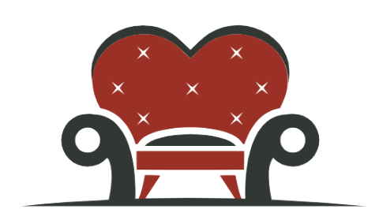

<title>Tinder Swipe - JS 01</title>
<main>

    <section>
        <header>
            
        </header>
        <div class="cards">
            <article>
                <span><h2>Gianicolucci - 27</h2></span>
                
            </article>

        </div>
        <footer>
            <button aria-label=""></button>
            <button aria-label=""></button>
            <button aria-label=""></button>
            <button aria-label=""></button>
            <button aria-label=""></button>
        </footer>
    </section>
</main>

<style>
    body {
        font-family: 'Franklin Gothic Medium', 'Arial Narrow', Arial, sans-serif;
        display: grid;
        place-content: center;
        min-height: 100vh;
        overflow: hidden;
        user-select: none;
        background: #222;
        zoom: 0.6;
    }

    main {
        background: url('./iPhone-Frame-PNG-Picture.png') no-repeat;
        background-size: contain;
        width: 320px;
        height: 640px;
        display: flex;
        zoom: 2;
        filter: drop-shadow(0 0 1px rgba(0, 0, 0, 0.32));
    }

    section {
        background: #f6f6f6;
        width: 100%;
        border-radius: 32px;
        display: flex;
        flex-direction: column;
        position: relative;
        overflow: hidden;
        padding: 16px 6px;
        margin: 16px;
    }

    header {
        display: flex;
        justify-content: center;

        & img {
            width: 50px;
            height: auto;

        }
    }

    footer {
        display: grid;
        grid-template-columns: repeat(5, 1fr);
        gap: 12px;
        padding: 0 24px;
        justify-content: center;
        align-items: center;

        & button {
            background: url('./tindersprites.jpeg') no-repeat;
            background-position: 0px  0px;
            background-size: 260px;
            height: 32px;
            width: 32px;
            border-radius: 50%;
            border: 1px solid #ccc;

        }
    }
    .cards {
        position: relative;
        width: 100%;
        height: 100%;
        margin: 10 auto;

        & article {
            border-radius: 8px;
            cursor: grab;
            box-shadow: 0 0 10px rgba(0, 0, 0, 0.32);
            overflow: hidden;
            position: absolute;
            inset: 0;
            width: 100%;
            width: 100%;
            height: 100%;
            z-index: 2;


            & img {
                width: 100%;
                height: 100%;
                object-fit: cover;
                
            }

            & h2 {
                color: white;
                position: absolute;
                inset: 0;
                display: flex;
                align-items: flex-end;
                height: 100%;
                width: 100%;
                padding: 16px;
                z-index: 3;
                background: linear-gradient(to top, #00000088 20%, transparent 40%);
            }
            & span {
                margin-left: 4px;
                font-size: 18px;
                line-height: 1,4;
                 font-weight: 400;
            }

        }
    }
</style>